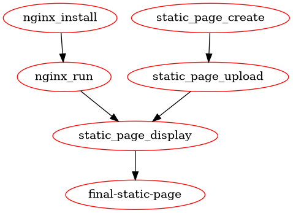

Create nice dependency graph#
Visualizing Makefile Dependencies#
In previous examples (Create nice dependency of tasks and Create nice dependency of tasks - one liners)
we have shown how to create nice dependency of tasks in Makefile.
This example will show how to create dependency graph from Makefile, which can be used to visualize dependencies between tasks.
Example scenario#
Expected scenario is following:
Install and run webserver (
nginx).Create single page with some content.
Upload page to webserver.
Showing order of tasks#
As before we will use Makefile to show order of tasks which are required to finish task.
Code#
Following code shows steps which are required to setup webserver, create page and upload it.
final-static-page: ## Build: Create and display a static page
final-static-page: static_page_display
nginx_install:
@echo "STEP: Install Nginx"
nginx_run: nginx_install
@echo "STEP: Run Nginx"
static_page_upload: static_page_create
@echo "STEP: Upload static page to Nginx"
static_page_create:
@echo "STEP: Create stacic Page"
static_page_display: static_page_upload nginx_run
@echo "STEP: Display page"
Result#
Following result shows steps to work on in order to finish task.
STEP: Create stacic Page
STEP: Upload static page to Nginx
STEP: Install Nginx
STEP: Run Nginx
STEP: Display page
As we can see in result above, we have clear order of tasks which are required to finish task.
Create nice dependency graph#
However in more complex scenarios it can be hard to visualize dependencies between tasks in plain text. Some task can be run in parallel (for example by different teams), some tasks can be run only after other tasks are finished.
Would be nice to have graph which shows dependencies between tasks.
Graphviz and make2graph#
Lucky for us there is software make2graph which allows to create graph from Makefile in very easy way.
Tool make2graph is using Graphviz to create graph from Makefile (by using DOT language).
Please check following links for more information:
Installation#
Also one can install make2graph and graphviz by using following command:
sudo apt-get install make2graph graphviz
Create graph#
Once all tools are installed, one can create graph by using following command.
Hint
Following example shows target from Makefile which is used to create graph, however one can use this command in terminal.
Please look for command below which starts with
@make- and when copy it to terminal, remove@character.
graph-current-makefile: ## Build: Create a graph of the current Makefile
graph-current-makefile:
@make -Bnd final-static-page | make2graph | dot -Tpng -o Makefile_result_graph.png
And after runnig above command we can see nice graph which shows dependencies between tasks.
This graph shows that:
Install and Run webserver can be done by one team.
Create page can be done by another team.
Both teams can work in parallel.
Above graphs shows general tasks - however there some decision needs to be taken, for example how to upload page to webserver.
Final Makefile#
All above steps can be done by using following Makefile, which will have targets:
Steps required to finish task.
Target to create graph.
Help target to show available targets.
# ============================================================================
# Based on page:
# https://gist.github.com/prwhite/8168133
#
# Example of self-documented makefile
#
# Add the following 'help' target to your Makefile
# And add help text after each target name starting with '\#\#'
# ============================================================================
.DEFAULT_GOAL = run-all-targets
.PHONY: help
help: ## Help: Show this help message
@echo 'usage: make [target] ...'
@echo
@echo 'Targets:'
@echo '========'
@egrep '^(.+)\:\ ##\ (.+)' ${MAKEFILE_LIST} | column -t -c 2 -s ':#'
run-all-targets: ## Build: Run all targets (default)
run-all-targets: final-static-page graph-current-makefile
# == Build graph start - marker for doc ==
graph-current-makefile: ## Build: Create a graph of the current Makefile
graph-current-makefile:
@make -Bnd final-static-page | make2graph | dot -Tpng -o Makefile_result_graph.png
# == Build graph stop - marker for doc ==
# NOTE: Following targets are not having description by purpose - goal of this file is to show resolving dependencies
# == Steps start - marker for doc ==
final-static-page: ## Build: Create and display a static page
final-static-page: static_page_display
nginx_install:
@echo "STEP: Install Nginx"
nginx_run: nginx_install
@echo "STEP: Run Nginx"
static_page_upload: static_page_create
@echo "STEP: Upload static page to Nginx"
static_page_create:
@echo "STEP: Create stacic Page"
static_page_display: static_page_upload nginx_run
@echo "STEP: Display page"
# == Steps stop - marker for doc ==
Summary#
In this example we have shown how to create dependency graph from Makefile.
By using make2graph and Graphviz we can visualize dependencies between tasks in very easy way.
This can help to understand dependencies between tasks and to plan work not only in more efficient way,
but also in more parallel way.
Also having graph allows quicker see which tasks depends of each other and which tasks, this is not always easy to see in plain text.